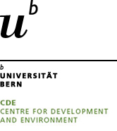

Freely accessible course materials, methods guides, and learning resources developed at CDE — supporting research-oriented education on sustainable development, plural economics, and sustainability transformations.
Click a category to explore · This page covers knowledge resources & materials
Each resource is openly licensed and available as a GitHub repository. Click through to the course page or browse the source files directly on GitHub.
A comprehensive introduction to sustainability covering planetary boundaries, sustainability transformations, and the multiple dimensions of sustainable development. Designed as a university-level special course.
An introduction to sustainable and plural economics, covering heterodox approaches, post-growth thinking, and the economics of sustainability transformations. Developed for master-level students.
Teaching materials for ID/TD research methods — core competencies for sustainability research, collaborative problem-solving, and working across disciplinary and societal boundaries.
A blog-format introduction to R for data analysis and visualisation, developed for students in sustainability and development research. Covers data wrangling, visualisation, and reproducible workflows.
All resources are designed for reuse and adaptation under open licenses. Whether you are a student, lecturer, or sustainability practitioner, here is how to get started.
Each course has a dedicated web page. Click "Open course" on any card above to access the materials directly in your browser — no download or account needed.
Every resource lives in a public GitHub repository. Clone or fork the repo to get all source files, adapt content for your own course, or contribute improvements.
Materials are openly licensed (see below). You are welcome to adapt them for your institutional context — just keep the attribution and share under the same terms.
Found an error, have a suggestion, or want to contribute materials? Open an issue on the relevant GitHub repository, or contact CDE directly via the website below.
These resources support Education for Sustainable Development (ESD) at all levels. They are modular — individual sections can be integrated into existing courses without using the full resource.
Materials are developed with both Global North and South contexts in mind, reflecting CDE's mandate to support sustainable development across different institutional and regional settings.